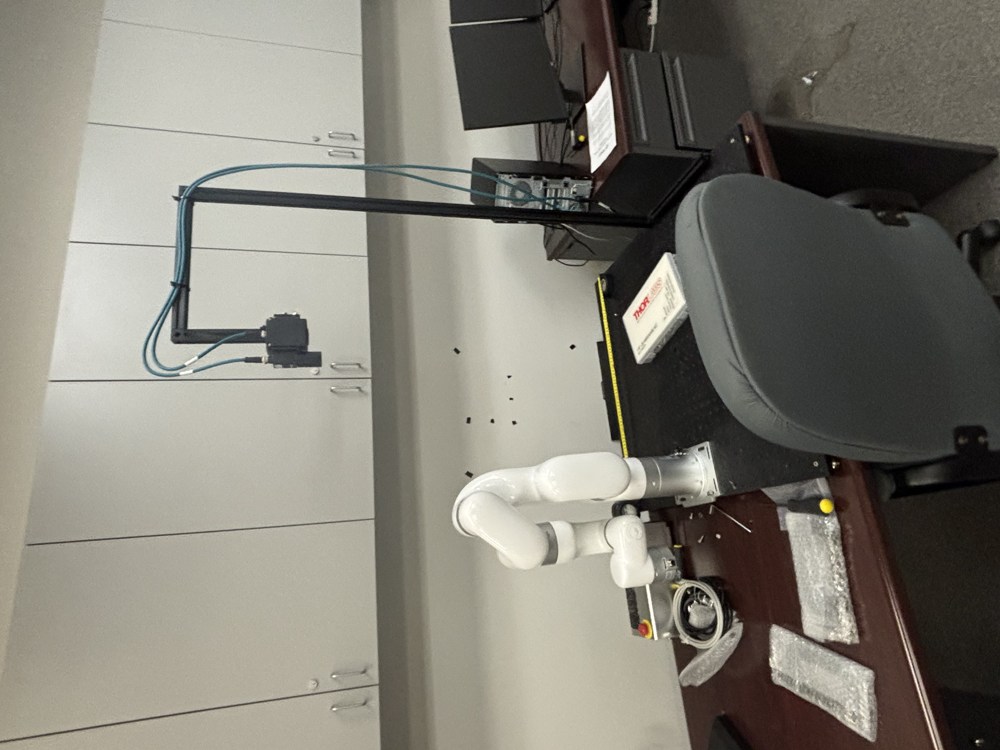
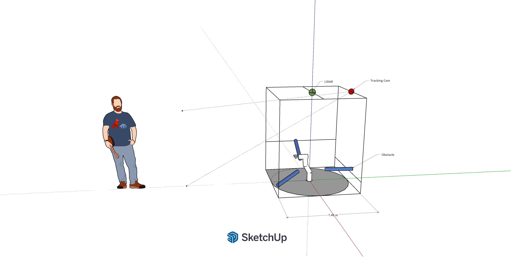
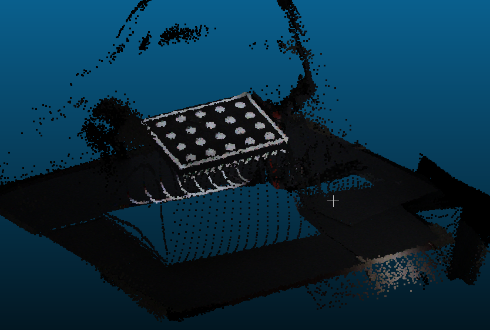
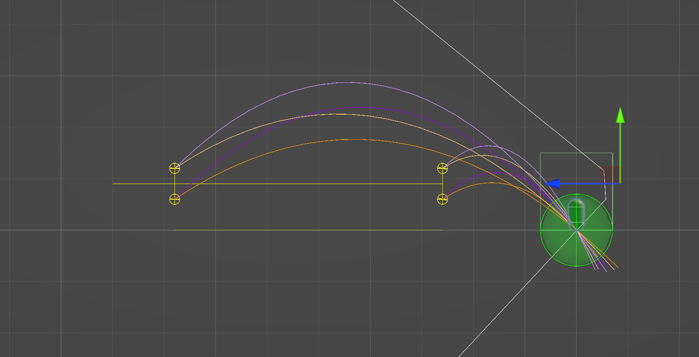
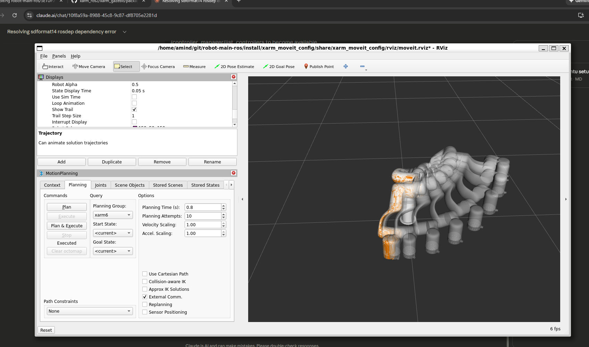
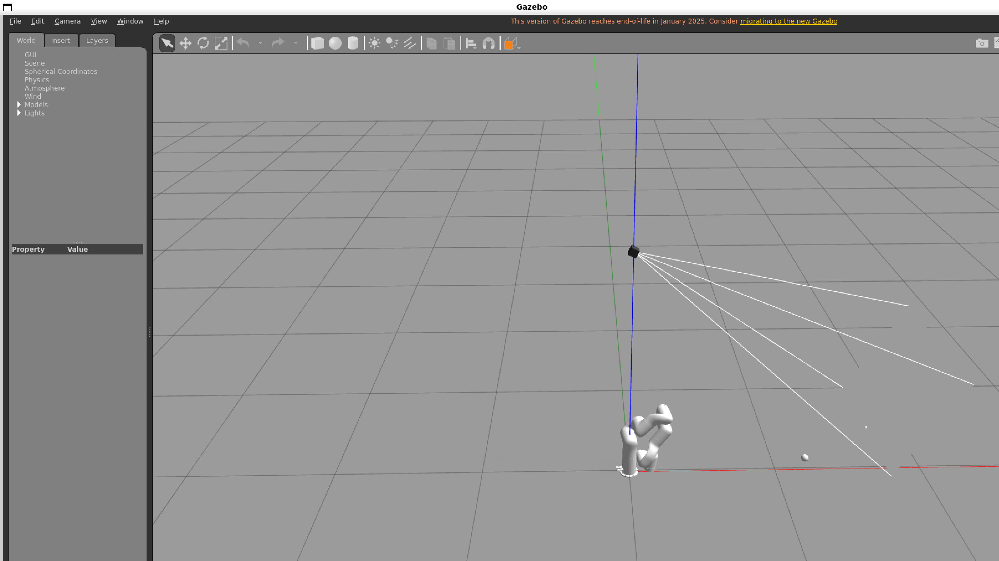
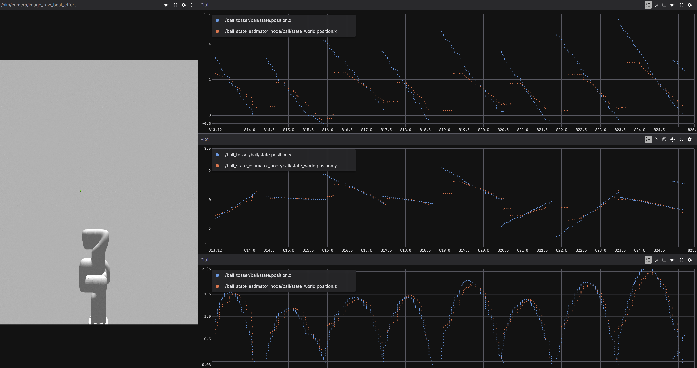
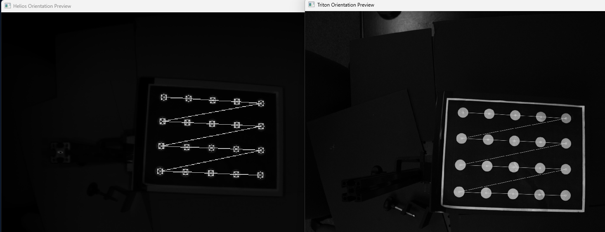

Overview
The senior capstone project is an autonomous ball-catching robotic arm system. The goal is for a robotic arm to detect a thrown ball in real time, predict its trajectory, plan a collision-free motion, and move to an intercept position to catch it — all within the fraction of a second the ball is in flight. The system integrates an xArm5 robot arm, a Time-of-Flight (ToF) depth camera for 3D perception, stereo camera tracking, and ROS 2 with MoveIt for real-time motion planning.


Perception & Sensor Fusion
The perception pipeline combines multiple sensing modalities to detect and track the ball in 3D space:
- Time-of-Flight depth camera: An overhead ToF depth camera provides a dense point cloud of the workspace with higher accuracy than LiDAR-based 3D scanning, used for environment mapping, obstacle detection, and calibration of the sensor-to-robot coordinate frame.
- Stereo camera calibration: A stereo camera pair was calibrated using a dot-pattern calibration board, enabling depth estimation from disparity for ball position triangulation.
- Ball detection: Computer vision algorithms detect the ball in the camera feed, producing real-time 3D position estimates that feed into the trajectory predictor.
- Sensor-to-robot registration: Extrinsic calibration between the ToF camera, stereo cameras, and the robot base frame ensures all position data is transformed into a common coordinate system for accurate motion planning.


Trajectory Prediction
Once the ball is detected, its trajectory must be predicted in real time to determine where and when the arm should intercept it. The system uses a ballistic state estimator that fits incoming position measurements to a physics-based projectile model, accounting for gravity and air resistance:
- Reachable workspace analysis: The arm's reachable volume was computed and visualized as a 3D envelope, defining the set of feasible intercept points. Only trajectories passing through this volume are deemed catchable.
- Trajectory sampling: Multiple candidate ball trajectories from different throw angles and speeds were simulated to validate the workspace coverage and identify blind spots.
- State estimation: A recursive estimator refines the predicted landing point as new camera frames arrive, converging to a stable intercept target within the first few frames of flight.


Motion Planning & Control
The arm's motion is planned and executed using ROS 2 with the MoveIt motion planning framework. The pipeline must generate collision-free joint trajectories in real time, fast enough to beat the ball to the intercept point:
- MoveIt integration: The arm's URDF model was configured in MoveIt with collision meshes, joint limits, and planning groups. The planner generates smooth, collision-aware trajectories from any current configuration to the target catch pose.
- Gazebo simulation: The full system was developed and tested in Gazebo before deploying to the physical robot, using a simulated camera to validate the perception-to-planning pipeline end-to-end.
- Joint position tracking: Real-time joint state feedback (position x, y, z) was monitored against commanded trajectories using Foxglove, ensuring the physical arm accurately follows planned motions with minimal tracking error.
- Obstacle avoidance: MoveIt's collision-aware planning ensures the arm avoids workspace boundaries and known obstacles (tables, sensor mounts) while reaching the intercept pose.


System Integration & Testing
Bringing the full pipeline together — perception, prediction, planning, and execution — required careful integration and iterative testing:
- End-to-end latency: The total pipeline latency from ball detection to arm motion command was minimized to ensure the arm arrives at the intercept point before the ball.
- Joint tracking validation: Commanded vs. actual joint positions were logged and compared across all axes, confirming the arm faithfully executes planned trajectories with minimal overshoot.
- Iterative catch testing: The system progressed from simulation-only testing, to open-loop positioning tests, to closed-loop catch attempts with live ball throws.

